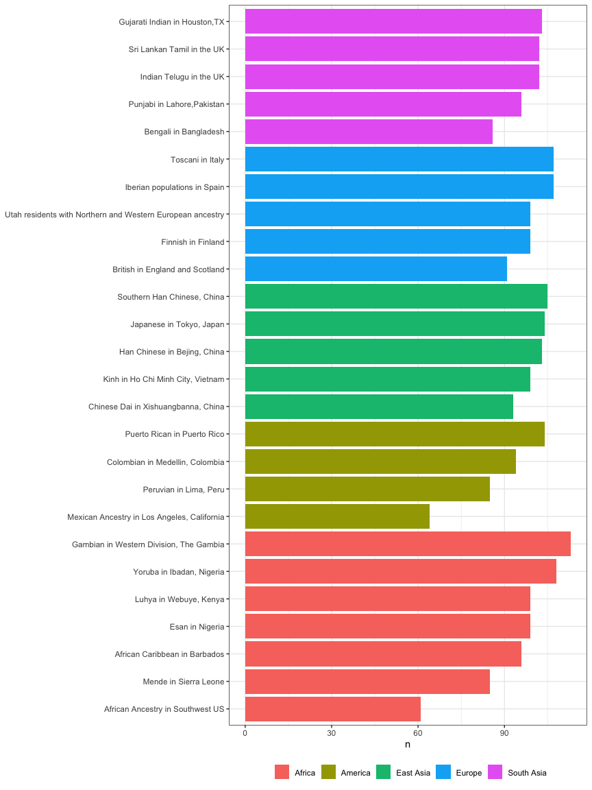
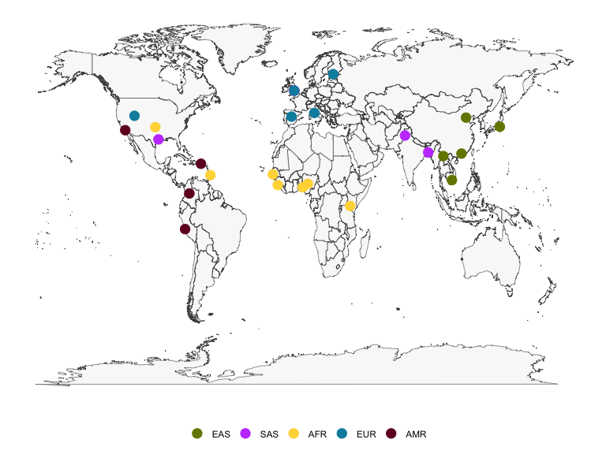
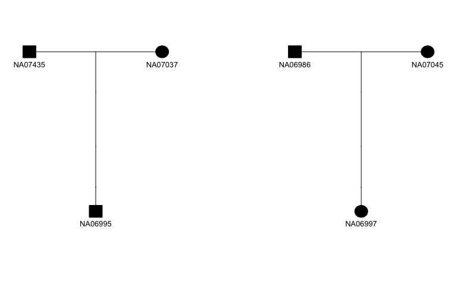

This kgp data package provides metadata about populations and data about samples from the 1000 Genomes Project, including the 2,504 samples sequenced for the Phase 3 release and the expanded collection of 3,202 samples with 602 additional trios.
Installation
You can install the released version of kgp from CRAN with:
install.packages("kgp")You can install the development version of kgp from GitHub with:
# install.packages("devtools")
devtools::install_github("stephenturner/kgp")About the data
The 1000 Genomes Project data Phase 3 data contains 2,504 samples with sequence data available, and was later expanded to 3,202 samples with high coverage adding 602 trios. Data is available through the 1000 Genomes FTP site and GitHub.
- Pilot publication: An integrated map of genetic variation from 1,092 human genomes
- Phase 1 publication: A map of human genome variation from population scale sequencing
- Phase 3 publication: A global reference for human genetic variation
- Expanded high-coverage publication: High-coverage whole-genome sequencing of the expanded 1000 Genomes Project cohort including 602 trios
There are three data sets available in the kgp package.
The kgp3 data contains pedigree and population information for the 2,504 samples included in the Phase 3 release of the 1000 Genomes Project data.
kgp3
#> # A tibble: 2,504 × 10
#> fid id pid mid sex sexf pop reg population region
#> <chr> <chr> <chr> <chr> <int> <fct> <chr> <chr> <chr> <chr>
#> 1 HG00096 HG00096 0 0 1 male GBR EUR British in Engla… Europe
#> 2 HG00097 HG00097 0 0 2 female GBR EUR British in Engla… Europe
#> 3 HG00099 HG00099 0 0 2 female GBR EUR British in Engla… Europe
#> 4 HG00100 HG00100 0 0 2 female GBR EUR British in Engla… Europe
#> 5 HG00101 HG00101 0 0 1 male GBR EUR British in Engla… Europe
#> 6 HG00102 HG00102 0 0 2 female GBR EUR British in Engla… Europe
#> 7 HG00103 HG00103 0 0 1 male GBR EUR British in Engla… Europe
#> 8 HG00105 HG00105 0 0 1 male GBR EUR British in Engla… Europe
#> 9 HG00106 HG00106 0 0 2 female GBR EUR British in Engla… Europe
#> 10 HG00107 HG00107 0 0 1 male GBR EUR British in Engla… Europe
#> # … with 2,494 more rows
#> # ℹ Use `print(n = ...)` to see more rowsThe kgpe data contains pedigree and population information all 3,202 samples included in the expanded 1000 Genomes Project data, which includes 602 trios.
kgpe
#> # A tibble: 3,202 × 11
#> fid id pid mid sex sexf pop reg population region phase3
#> <chr> <chr> <chr> <chr> <int> <fct> <chr> <chr> <chr> <chr> <lgl>
#> 1 HG00096 HG00096 0 0 1 male GBR EUR British i… Europe TRUE
#> 2 HG00097 HG00097 0 0 2 female GBR EUR British i… Europe TRUE
#> 3 HG00099 HG00099 0 0 2 female GBR EUR British i… Europe TRUE
#> 4 HG00100 HG00100 0 0 2 female GBR EUR British i… Europe TRUE
#> 5 HG00101 HG00101 0 0 1 male GBR EUR British i… Europe TRUE
#> 6 HG00102 HG00102 0 0 2 female GBR EUR British i… Europe TRUE
#> 7 HG00103 HG00103 0 0 1 male GBR EUR British i… Europe TRUE
#> 8 HG00105 HG00105 0 0 1 male GBR EUR British i… Europe TRUE
#> 9 HG00106 HG00106 0 0 2 female GBR EUR British i… Europe TRUE
#> 10 HG00107 HG00107 0 0 1 male GBR EUR British i… Europe TRUE
#> # … with 3,192 more rows
#> # ℹ Use `print(n = ...)` to see more rowsThe kgpmeta contains population metadata for the 26 populations across five continental regions.
kgpmeta
#> # A tibble: 26 × 7
#> pop population reg region regco…¹ lat lng
#> <chr> <chr> <chr> <chr> <chr> <dbl> <dbl>
#> 1 CDX Chinese Dai in Xishuangbanna, China EAS East As… #778500 22 101.
#> 2 CHB Han Chinese in Bejing, China EAS East As… #778500 39.9 116.
#> 3 JPT Japanese in Tokyo, Japan EAS East As… #778500 35.7 140.
#> 4 KHV Kinh in Ho Chi Minh City, Vietnam EAS East As… #778500 10.8 107.
#> 5 CHS Southern Han Chinese, China EAS East As… #778500 23.1 113.
#> 6 BEB Bengali in Bangladesh SAS South A… #c44cfd 23.7 90.4
#> 7 GIH Gujarati Indian in Houston,TX SAS South A… #c44cfd 29.8 -95.4
#> 8 ITU Indian Telugu in the UK SAS South A… #c44cfd 52.5 -1.89
#> 9 PJL Punjabi in Lahore,Pakistan SAS South A… #c44cfd 31.6 74.4
#> 10 STU Sri Lankan Tamil in the UK SAS South A… #c44cfd 52.5 -1.89
#> # … with 16 more rows, and abbreviated variable name ¹regcolor
#> # ℹ Use `print(n = ...)` to see more rowsExamples
Count the number of samples in each region, or in each population:
kgp3 %>%
count(region) %>%
knitr::kable()| region | n |
|---|---|
| Africa | 661 |
| America | 347 |
| East Asia | 504 |
| Europe | 503 |
| South Asia | 489 |
kgp3 %>%
count(region, population) %>%
knitr::kable()| region | population | n |
|---|---|---|
| Africa | African Ancestry in Southwest US | 61 |
| Africa | African Caribbean in Barbados | 96 |
| Africa | Esan in Nigeria | 99 |
| Africa | Gambian in Western Division, The Gambia | 113 |
| Africa | Luhya in Webuye, Kenya | 99 |
| Africa | Mende in Sierra Leone | 85 |
| Africa | Yoruba in Ibadan, Nigeria | 108 |
| America | Colombian in Medellin, Colombia | 94 |
| America | Mexican Ancestry in Los Angeles, California | 64 |
| America | Peruvian in Lima, Peru | 85 |
| America | Puerto Rican in Puerto Rico | 104 |
| East Asia | Chinese Dai in Xishuangbanna, China | 93 |
| East Asia | Han Chinese in Bejing, China | 103 |
| East Asia | Japanese in Tokyo, Japan | 104 |
| East Asia | Kinh in Ho Chi Minh City, Vietnam | 99 |
| East Asia | Southern Han Chinese, China | 105 |
| Europe | British in England and Scotland | 91 |
| Europe | Finnish in Finland | 99 |
| Europe | Iberian populations in Spain | 107 |
| Europe | Toscani in Italy | 107 |
| Europe | Utah residents with Northern and Western European ancestry | 99 |
| South Asia | Bengali in Bangladesh | 86 |
| South Asia | Gujarati Indian in Houston,TX | 103 |
| South Asia | Indian Telugu in the UK | 102 |
| South Asia | Punjabi in Lahore,Pakistan | 96 |
| South Asia | Sri Lankan Tamil in the UK | 102 |
kgp3 %>%
count(region, population) %>%
arrange(region, n) %>%
mutate(population=forcats::fct_inorder(population)) %>%
ggplot(aes(population, n)) +
geom_col(aes(fill=region)) +
labs(fill=NULL, x=NULL, x="N") +
coord_flip() +
theme_bw() +
theme(legend.position="bottom")
The latitude and longitude coordinates in kgpmeta can be used to plot a map of the locations of the 1000 Genomes populations. There is also a column for region color, which provides a hexadecimal color code to enable reproduction of the population data map as shown on the IGSR population data page. The figure below shows a static map produced using ggplot2, but interactive maps such as that shown on the IGSR population data portal can be created with the leaflet package.
pal <- kgpmeta %>% distinct(reg, regcolor) %>% tibble::deframe()
ggplot() +
geom_polygon(data=map_data("world"),
aes(long, lat, group=group),
col="gray30", fill="gray95", lwd=.2, alpha=.5) +
geom_point(data=kgpmeta, aes(lng, lat, col=reg), size=4) +
scale_colour_manual(values=pal) +
theme_minimal() +
theme(axis.ticks = element_blank(),
axis.text = element_blank(),
axis.title = element_blank(),
legend.title = element_blank(),
panel.grid = element_blank(),
legend.position = "bottom")
The table below shows a selection of samples from kgpe showing pedigree information for each sample. This pedigree information could be used in downstream analysis to filter out related individuals, select only trios, or to visualize family structure.
kgpe %>%
filter(pid!="0" & mid!="0") %>%
group_by(pop) %>%
slice(1) %>%
head(12) %>%
arrange(reg, pop) %>%
select(fid:reg) %>%
select(-sexf) %>%
knitr::kable()| fid | id | pid | mid | sex | pop | reg |
|---|---|---|---|---|---|---|
| BB01 | HG01881 | HG01879 | HG01880 | 2 | ACB | AFR |
| 2367 | NA19702 | NA19700 | NA19701 | 1 | ASW | AFR |
| NG06 | HG02924 | HG02923 | HG02922 | 1 | ESN | AFR |
| GB15 | HG02463 | HG02461 | HG02462 | 1 | GWD | AFR |
| SL02 | HG03056 | HG03054 | HG03055 | 1 | MSL | AFR |
| CLM03 | HG01114 | HG01112 | HG01113 | 2 | CLM | AMR |
| SH001 | HG00405 | HG00403 | HG00404 | 2 | CHS | EAS |
| VN046 | HG02015 | HG02017 | HG02016 | 1 | KHV | EAS |
| 1341 | NA06991 | NA06993 | NA06985 | 2 | CEU | EUR |
| IBS001 | HG01502 | HG01500 | HG01501 | 1 | IBS | EUR |
| BD01 | HG03008 | HG03006 | HG03007 | 1 | BEB | SAS |
| IT002 | HG03719 | HG03725 | HG03722 | 2 | ITU | SAS |
The figure below shows an example of a pedigree plot made by parsing the pedigree information using skater and plotting using kinship2. The skater package provides documentation, examples, and a vignette demonstrating how to iteratively plot all pedigrees in a given data set.
kgpe %>%
filter(fid=="13291") %>%
transmute(fid, id, dadid=pid, momid=mid, sex, affected=1) %>%
skater::fam2ped() %>%
pull(ped) %>%
purrr::pluck(1) %>%
kinship2::plot.pedigree(mar=c(4,2,4,2), cex=.8)